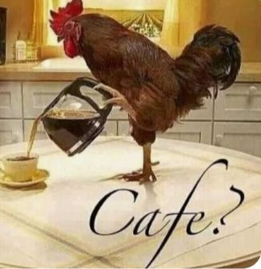

No Café e Código, a pausa para programação ganha sabor e inspiração. Descubra nossos cafés favoritos para programar, perfeitos para acompanhar uma sessão de concentração; mergulhe em playlists lo-fi que deixam o ambiente mais criativo e tranquilo; confira o nosso “café da semana”, uma sugestão especial para experimentar novos aromas; inspire-se com fotos de cafeterias aconchegantes e acolhedoras; e ainda encontre receitas rápidas para preparar aquela bebida que transforma qualquer código em momento de prazer.
Nada como um bom café para acompanhar uma sessão de programação. Aqui você encontra nossos cafés favoritos para programar, desde os clássicos expressos e cappuccinos até combinações mais ousadas e especiais, pensadas para despertar os sentidos e manter a mente alerta. Cada xícara vem acompanhada de uma playlist lo-fi cuidadosamente selecionada, criando um ambiente de concentração e criatividade que ajuda a transformar horas de código em momentos agradáveis.
